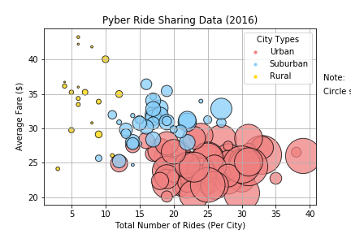

Average Fare vs Total Rides vs City Type

The bubble plot displayed above showcases the relationship between the average fare ($) per city, total number of rides per city, total number of drivers per city, as well as city type (urban, suburban, and rural.
The Y axis represents the average fare cost in USD, while the X axis represents the total number of rides in each city. The size of each individual plot is relative to the number of drivers in the particular city represented. The larger the individual plot, the more drivers in that city.
The color of each individual plot represents the city type:
- Urban - Coral
- Suburban - Light Blue
- Rural - Gold
Below are some trends that were observed based on the data in the plot:
- There are significantly more drivers in Urban cities than both Suburban and Urban
- There were more rides in Urban cities than any other type, however the average fares were the lowest
- There were less rides in Rural cities than any other type, however the average fares were the highest